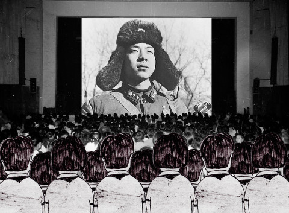

Jie Li

Jie Li * 1988 in Henan, China. Studium an der Akademie der Bildenden Künste Nürnberg. Meisterschülerin bei Baranowsky. 2017 Rückkehr nach China. In ihren Arbeiten setzt sich Jie Li mit dem Chinabild, der Vermittlung und der eigenen Kindheitserziehung auseinander und kombiniert Zeichnungen mit Realfilm.
Ausstellungen (u.a.): Wiensowski & Harbord, Berlin 2014 Kulturpalast Anwanden 2017
Einige kleine Erlebnisse
2016 – Video, Sound – 16'40''
Buch, Kamera, Ton, Zeichnungen, Text, Stimme: Ji Lie
Das Staatstheater in Henan wurde Ji Lie in den 1980er Jahren zu einem wichtigen Ort ihrer Kindheit. Heute existiert das Theater nicht mehr. In historischen Dokumenten und eigenen Zeichnungen erinnert sich Ji Lie an den einprägsamen Ort. Aus dem Off reflektiert sie tagebuchartig über das Verhältnis des Kindes zum großen Staat und über ihr persönliches Verständnis von Kollektivismus, Individuum. Dies aus der Perspektive eines "staatlich verordneten" Einzelkinds.